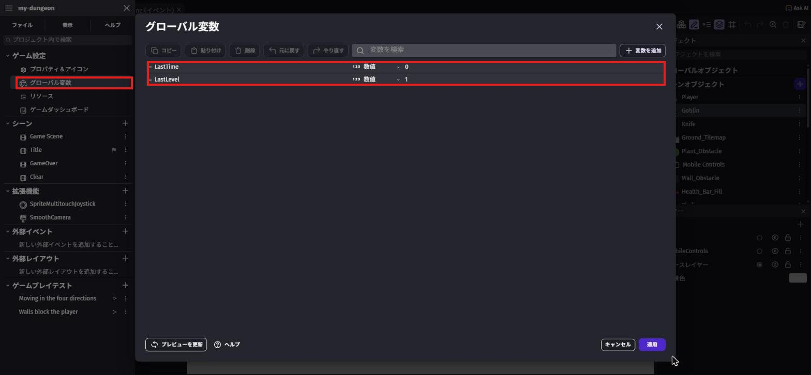
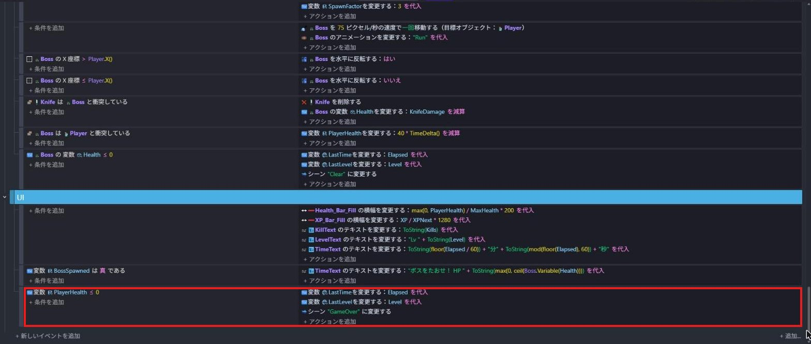
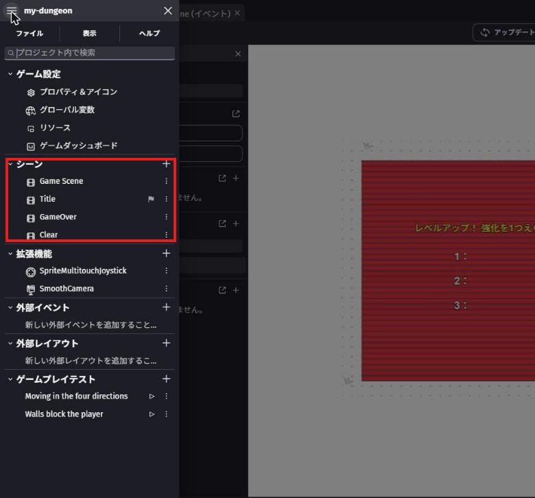
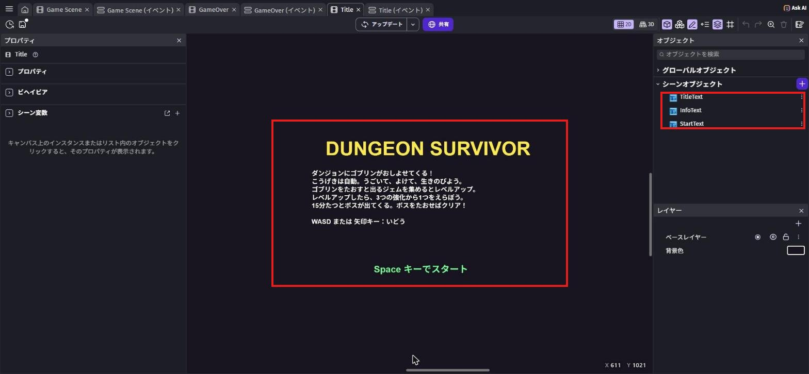
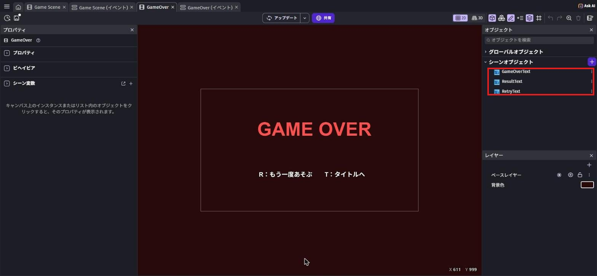
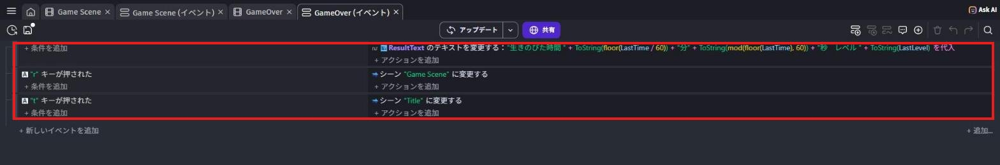
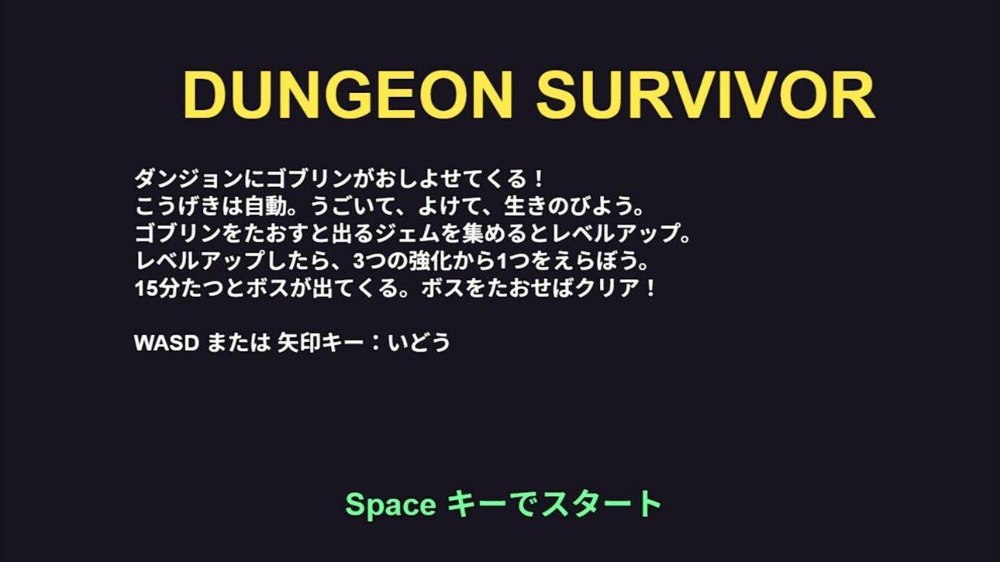
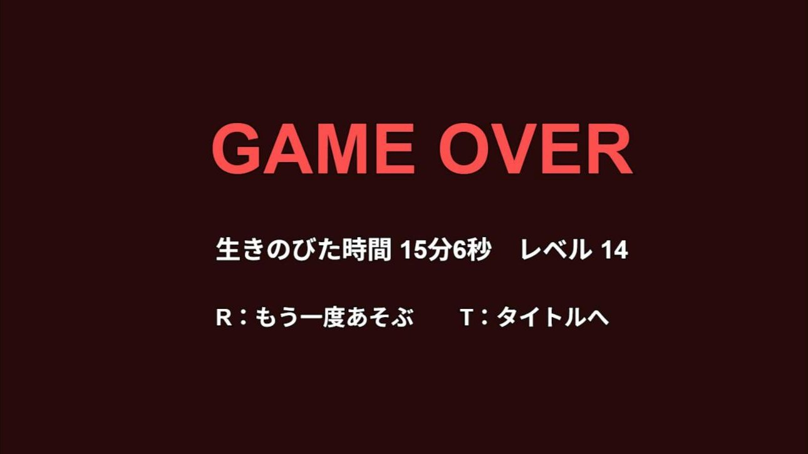
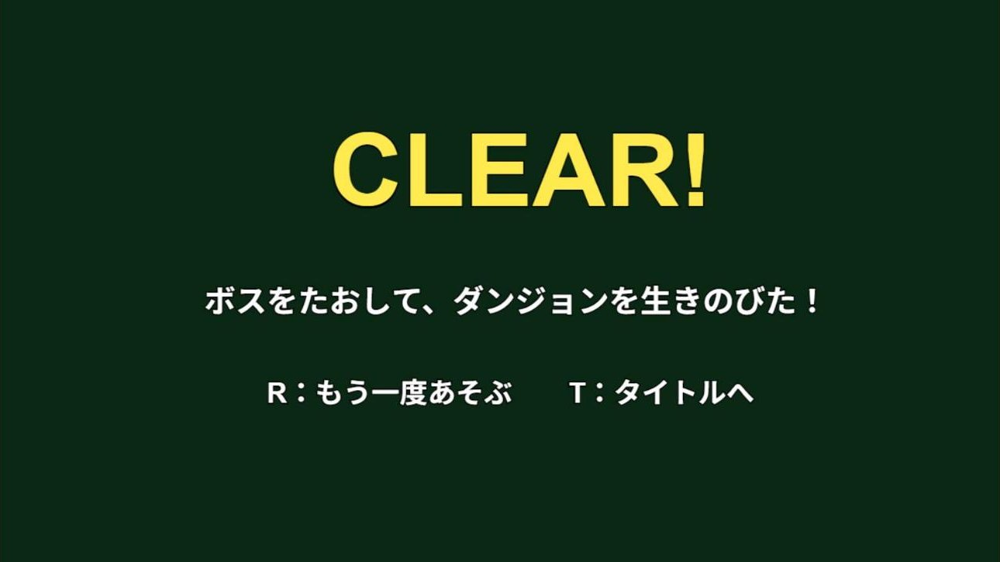
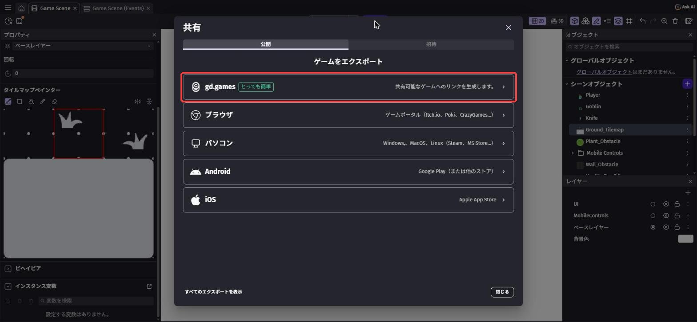

仕上げて発表しよう
🎯 この章でできるようになること
- グローバル変数で、シーンをまたいで結果を受けわたせる
- タイトル・ゲームオーバー・クリアの画面を作って、ゲームを1本につなげられる
- 変数や式の数を変えて、自分の好きなむずかしさに調整できる
- 人に遊んでもらい、作品の「こだわり」と「工夫」を伝えられる
※ 第5章までが終わっていない人も大丈夫。
今日は「できているところまで」を自分の作品として仕上げて発表します。
ボスがいなくても、騎士がナイフでゴブリンをたおしてレベルアップできれば、立派な作品だよ。
6-1. この章で作るしくみ
6-2. 結果を次のシーンにわたそう
左上の「≡」を押して、プロジェクトマネージャーを開きます。
「ゲーム設定」の「グローバル変数」を押すと、「グローバル変数」の画面が開きます。
「変数を追加」で次の2つを作り、「適用」を押します。
LastTime（生きのびた時間）… 数値、値は0LastLevel（最後のレベル）… 数値、値は1

シーン変数は、シーンが変わるとリセットされてしまいます。
グローバル変数ならシーンが変わっても残るので、Game Scene の結果を GameOver の画面で表示できます。
「Game Scene (イベント)」の UI グループで、「PlayerHealth ≦ 0」のイベントを直します。
「シーンを変更する」より上に、アクションを2つ足します。
- 「変数の値を変更」で
LastTimeを「＝（代入）」Elapsed - 「変数の値を変更」で
LastLevelを「＝（代入）」Level
「シーンを変更する」は、ダブルクリックしてシーンを "GameOver" に変えます（GameOver のシーンは次の手順で作るので、先に作ってから直してもOK）。

Boss グループの「Boss の 変数 Health ≦ 0」のイベントにも、同じ2つのアクションを「シーン "Clear" に変更する」より上に足します。
6-3. タイトル・ゲームオーバー・クリアの画面を作ろう
プロジェクトマネージャーの「シーン」の「＋」で、Title と GameOver を作ります。
第5章で Clear を作っていない人は、ここで作ります。
シーンの名前は、イベントの "GameOver" などと大文字・小文字まで同じにしよう。

Title のシーンを開き、「テキスト」で3つの文字を作って置きます。
右下の「背景色」を押すと、シーンの背景の色を変えられます（写真では、こい紺色）。
| 名前 | 最初に表示するテキスト |
|---|---|
TitleText | DUNGEON SURVIVOR（大きく、黄色） |
InfoText | 遊び方の説明（下の例） |
StartText | Space キーでスタート（緑） |
ダンジョンにゴブリンがおしよせてくる！
こうげきは自動。うごいて、よけて、生きのびよう。
ゴブリンをたおすと出るジェムを集めるとレベルアップ。
レベルアップしたら、3つの強化から1つをえらぼう。
15分たつとボスが出てくる。ボスをたおせばクリア！
WASD または 矢印キー：いどう
「Title (イベント)」を開き、イベントを1つ作ります。
条件は「キーが押された」で Space。
アクションは「シーンを変更する」で "Game Scene"。
GameOver のシーンに、「テキスト」で3つの文字を作って置きます。
背景色は、こい赤茶色などにすると雰囲気が出ます。
| 名前 | 最初に表示するテキスト |
|---|---|
GameOverText | GAME OVER（大きく、赤） |
ResultText | （イベントで書きかえるので、何でもOK） |
RetryText | R：もう一度あそぶ T：タイトルへ |

ResultText は、GAME OVER と R：の間に置いています
「GameOver (イベント)」に、イベントを3つ作ります。
| 条件 | アクション |
|---|---|
| （条件なし） | ResultText の「テキスト」を「＝（代入）」下の式 |
「キーが押された」で r | 「シーンを変更する」で "Game Scene" |
「キーが押された」で t | 「シーンを変更する」で "Title" |
"生きのびた時間 " + ToString(floor(LastTime / 60)) + "分" + ToString(mod(floor(LastTime), 60)) + "秒 レベル " + ToString(LastLevel)
時間の式は、第5章の「○分○秒」と同じ形で、Elapsed のかわりに LastTime を使っています。
Clear のシーンも、GameOver と同じように作ります。
文字は ClearText（「CLEAR!」、黄色）、ClearInfoText（「ボスをたおして、ダンジョンを生きのびた！」）、そして RetryText の3つ。
背景色は、こい緑などがおすすめです。
イベントは、GameOver の r と t の2つと同じです。
GameOver (イベント) で2つのイベントを選んでコピーし、Clear (イベント) に貼り付けると早いよ。
プロジェクトマネージャーの「シーン」で、Title の「⋮」を押し、「スタートシーンとして設定」を選びます。
Title の横に旗マークがつけば OK です（上の「シーンが4つになった」の写真を見てね）。
これで、プレビューやゲームを始めたとき、最初にタイトルが出ます。
Game Scene にもどり、「テキスト」で GuideText を作ります。
最初に表示するテキスト は「WASD または 矢印キー：いどう（こうげきは自動）」。
UI レイヤーの左下（X 20、Y 680 くらい）に置きます。
ゲームの途中でも、遊び方がわかるようになります。
プレビューすると、タイトルから始まります。
Space キーでゲームが始まり、やられると GAME OVER の画面に、生きのびた時間とレベルが出ます。
R でもう一度、T でタイトルにもどれば成功！
クリアの画面は、BossTime を 60 にしてボスをたおしてたしかめよう（たしかめたら 900 にもどす）。


生きのびた時間とレベルが出る

6-4. 数字を調整して、自分のゲームにしよう
このゲームは、変数や式の数を変えるだけで、遊びごたえが大きく変わります。
下の表を見て、「どこを変えると何が変わるか」をたしかめながら調整しよう。
1回に変えるのは1か所だけにして、変えたらすぐプレビューで確認するのがコツです。
| 変えたいこと | どこを変える？ | 今の数 |
|---|---|---|
| ゴブリンが出てくる間隔 | Enemy の "EnemyTimer" の式 max(0.15, 0.9 - Elapsed / 60 * 0.06) | はじめ 0.9 秒、1分ごとに 0.06 秒短く、いちばん短くて 0.15 秒 |
| 画面にいるゴブリンの最大数 | 「シーン上のオブジェクトインスタンスの数」の比較する値 | 250 |
| ゴブリンの速さ | Enemy の min(220, 90 + Elapsed / 5) | はじめ 90、いちばん速くて 220 |
| ゴブリンの体力・1回に出る数がふえるペース | Enemy の 1 + floor(Elapsed / 90) の 90（2か所） | 90秒ごと |
| ゴブリンにさわったときのダメージ | Enemy の 20 * TimeDelta() | 1秒に 20 |
| ボスが出てくる時間 | シーン変数 BossTime | 900（15分） |
| ボスの体力 | Boss のオブジェクト変数 Health | 150 |
| ボスの速さ・ダメージ・大きさ | Boss の 75、40 * TimeDelta()、スケール 9 | 75・40・9 |
| ボスが出たあとのゴブリンの出かた | ボスを出すイベントの SpawnFactor | 3（間隔が3倍） |
| レベルアップのペース | シーン変数 XPNext と、round(8 + Level * 6 + Level * Level * 0.5) | はじめ 8 |
| ジェムを吸いよせる距離 | シーン変数 MagnetRange | 150 |
| 最初のナイフの強さ | シーン変数 KnifeCooldown・KnifeCount・KnifeDirs・KnifeDamage | 1・1・1・1 |
| 強化の上限 | 反映のサブイベントの max(0.3, …)、min(5, …)、min(8, …) | 0.3 秒・5本・8方向 |
| 騎士の速さ・体力 | シーン変数 PlayerSpeed、PlayerHealth と MaxHealth | 300・100 |
「自分にはちょっとかんたん」くらいが、はじめて遊ぶ人にはちょうどいいことが多いです。
ボスまでたどりつけるか確かめたいときは、BossTime を 60 にしてためそう（最後に 900 にもどすのを忘れずに）。
6-5. 今日の進め方
「作る → 遊んでもらう → 直す」を何回まわせるかが、作品の完成度を決める
6-6. 仕上げ計画を立てよう
まずは、今日やりたいことを紙に書き出そう。
ポイントは、「絶対やること」と「時間があればやること」を分けること。
欲ばって全部やろうとすると、発表のときに動かない……ということになりがちです。
アイデア一覧（★が多いほどむずかしい）
| アイデア | むずかしさ | 使う知識（復習する章） |
|---|---|---|
| 6-4 の表を見て、むずかしさを調整する | ★ | 第3章〜第5章 |
| ジェムを拾ったときやレベルアップのときに音を鳴らす | ★ | 第2章（サウンドを再生する） |
| タイトルやゲームオーバーの画面を自分らしくかざる | ★ | 第6章 |
| ゴブリンやボス、ナイフの見た目を入れかえる（アセットの交換） | ★★ | 第1章 |
| クリアの画面にも、時間とレベルを出す | ★★ | 第6章（ResultText の式） |
| 7つ目の強化を足す | ★★★ | 第4章の「やってみよう」 |
| 2種類目の敵を作る（Goblin を複製して、速さや体力を変える） | ★★★ | 第3章・第5章のボス |
課題1: 自分の「仕上げ計画」を書こう
次の3つを紙に書こう。
書けたら講師に見せてから、作業スタート！
- 絶対やること（1〜2個）
- 時間があればやること（1〜3個）
- このゲームのいちばんのこだわり（ひとこと）
ヒントを見る
「絶対やること」は、30分くらいで終わりそうなものにしよう。
迷ったら、今までの章で友だちや講師に遊んでもらったときの意見を思い出してみて。
遊んだ人が困っていた場所を直すのも、立派な仕上げだよ。
6-7. テストプレイしてもらおう
ある程度できたら、となりの人と交換して遊んでもらおう。
遊んでもらうときは、作った人は説明しないで、だまって見ているのがコツです。
説明しないとわからない部分は、ゲームの中でわかるように直すべき部分だからです。
タイトルの説明文や GuideText が役に立っているか、よく見ておこう。
| 遊んだ人に聞くこと | メモ |
|---|---|
| 遊び方は、説明なしでわかった？ | |
| むずかしすぎた・かんたんすぎたところは？ | |
| いちばん楽しかったところは？（好きな強化は？） | |
| バグ（おかしな動き）はあった？ |
課題2: もらった意見で1か所以上直そう
テストプレイでもらった意見の中から、1つ選んでゲームを直そう。
直したら、もう一度遊んでもらって「良くなった？」と聞いてみよう。
ヒントを見る
「むずかしすぎる」と言われたら、6-4 の表から、ゴブリンをおそくする・出てくる間隔を長くする・ダメージを小さくする、など直し方を選ぼう。
全部の意見に従う必要はないよ。
自分の「こだわり」とぶつかる意見は、取り入れなくてもOK。
6-8. 発表の準備をしよう
発表では、ゲームを遊んで見せながら、次の順番で話すと伝わりやすくなります。
1人の持ち時間は講師が伝えます。
| 順番 | 話すこと | 例 |
|---|---|---|
| 1 | ゲームの名前 | 「〇〇〇という名前のゲームです」 |
| 2 | どんなゲームか・遊び方 | 「ナイフが自動で飛ぶので、動いてゴブリンをよけながらジェムを集め、15分後のボスをたおすゲームです」 |
| 3 | いちばんのこだわり | 「後半はゴブリンがすごい数になるように調整して、ハラハラするようにしました」 |
| 4 | 苦労したこと・どう解決したか | 「ボスが何体も出てくるバグがあって、BossSpawned の条件を入れわすれていたのを見つけて直しました」 |
| 5 | 次にやってみたいこと | 「2種類目の敵と、新しい武器を作りたいです」 |
課題3（チャレンジ）: 「苦労したこと」を具体的に話そう
発表の4番目「苦労したこと・どう解決したか」を、どんなイベントを、どう直したかまで具体的に話そう。
聞いている人が「自分も同じところでつまずくかも」と思えたら大成功。
ヒントを見る
失敗の話は、発表でいちばん役に立つ部分です。
つまずきポイント集で読んだことや、AIに相談したことを思い出してみよう。
「最初は〇〇だと思ったけど、実は△△だった」という話し方をすると伝わりやすいよ。
6-9. 作品の公開について（任意）
GDevelopには、作ったゲームをインターネットで遊べるように公開する機能があります。
画面の上の真ん中にある「共有」ボタンを押すと、公開のしかたを選ぶ画面が開きます。
いちばん上の「gd.games」（とっても簡単）を使うと、遊べるURLが作れます。
公開すると、家族や友だちにURLを送って遊んでもらえます。
ただし、公開は講師の確認が終わってからにしてください。
公開する前に、BossTime が 900 にもどっているかも確かめよう。
- ゲームの中やタイトル・説明文に、本名・学校名・住所などを書かない
- アセットストアの無料素材や自分で作った素材だけを使っているか、もう一度確認する
- この教科書で使った「Dungeon」（0x72）、体力バー、ドクロ、ジェム、効果音は CC0 なので、クレジットは書かなくてもOK。
自分で CC-BY の素材を追加したときは、作った人の名前（クレジット）をゲームの中や説明文に書く - 公開するかどうかは、保護者の方とも相談して決める

gd.gamesで公開できる（講師の確認が終わってから）
6-10. この先の3つの道
全6回の導入はこれでおしまい。
ここから先は、自分で進む道を選びます。
どの道を選んでも、この6回で身につけた「条件 → アクションで考える力」と「自分で原因を探して直す力」が土台になります。
どれを選んでもOK。
大事なのは「自分が何を作りたいか」
| 道 | こんな人に向いている |
|---|---|
| 道1 GDevelopでオリジナル制作 | 今日のゲームをもっと大きくしたい人、まったく新しいゲームを作りたい人 |
| 道2 ほかの技術を自分で学ぶ | Unity・Webサイト・プログラミング言語など、気になる技術がある人 |
| 道3 講師と生成AIで調べながら作る | 作りたいものはあるけど、どの技術を使えばいいかわからない人 |
次の講習までに、どの道を選ぶか、そしてその理由を考えてきてください。
まだ決められない人は、「作ってみたいもの」をひとつ考えてくるだけでもOKです。
6-11. 🚨 つまずきポイント集
プレビューしてもタイトルが出ない（いきなりゲームが始まる）
原因: Title が開始シーンになっていない。
直し方: プロジェクトマネージャーで、Title の横に旗マークがついているか確かめよう。
ゲームオーバーの画面で「0分0秒 レベル 1」になる
原因: LastTime・LastLevel を入れるアクションがない、または LastTime・LastLevel をグローバル変数ではなくシーン変数に作ってしまった。
シーン変数は、シーンが変わるとリセットされます。
直し方: 「PlayerHealth ≦ 0」のイベントに2つのアクションがあるか確かめよう。
プロジェクトマネージャーの「グローバル変数」に LastTime と LastLevel があるかも確かめよう。
R や T、Space を押しても何も起きない
原因: 条件をそのシーン以外のイベントに作った、またはシーンの名前がちがう。
直し方: GameOver の条件は「GameOver (イベント)」に作ろう。
"Game Scene"、"Title" など、シーンの名前は大文字・小文字・空白まで同じか確かめよう。
いろいろ変えていたら、急にゲームがおかしくなった
原因: 最後に変えたところが原因のことがほとんど。
直し方: まず Ctrl + Z⌘ + Z で1つずつ戻して、どこで直るか確かめよう。
これからは「1つ変えたらプレビューで確認」をくせにしよう。
発表の直前に、新しいことを始めて壊れた
原因: 時間ギリギリの大きな変更。
直し方: 発表の15分前からは、新しいしかけを作るのはやめて、テストプレイと発表練習だけにしよう。
Ctrl + S⌘ + S の保存も忘れずに。
💡 15分たっても直らないときは、次の「AIを味方につけよう」の方法で相談してみよう。
発表の日は時間が限られているので、早めに講師を呼ぶのもアリです。
6-12. 🤖 AIを味方につけよう
最終回のAIの使い方は、「作品をもっと良くするための相談相手」。
ただし、作品と発表の主役はキミです。
この章でのAIの使い所
✅ 良い使い方 — 自分で考えたものを、もっと良くするために聞く
- 調整の相談: 「後半がむずかしすぎる」など、今の数と困っていることを伝えて、どの数を変えるとよいか考えてもらう（変えるのは自分）
- 発表原稿のチェック: 自分で書いた原稿を見せて、わかりにくいところを指摘してもらう
- この先の道の相談: 自分の興味を伝えて、どんな技術があるか教えてもらう（選ぶのは自分）
そのままコピペで使えるプロンプト（AIへの指示文）の例:
GDevelopで作ったサバイバルゲームの発表原稿を書きました。
書き直さずに、「聞いている人にわかりにくいところ」を3つだけ指摘してください。
（ここに自分の原稿をはりつける）
次は「〇〇〇（作ってみたいもの）」を作ってみたいです。
どんな技術や道具があるか、中学生でも始めやすい順に3つ教えてください。
それぞれの良いところと大変なところも教えてください。
🚫 やめておこう
- 発表原稿をAIにまるごと書いてもらう（自分の言葉で話すから、作品の良さが伝わる！）
- 「どの道を選ぶか」をAIに決めてもらう（AIは情報をくれるけど、決めるのはキミ）
- AIの答えを試して確かめずに信じる（AIは古いGDevelopの画面の話をすることもある。
必ず自分の画面で確認）
6-13. ✅ チェックリスト
全部チェックできたら、ローグライク編 完全クリア！
🎉 スターターから、自分の力でゲームを1本に仕上げました。
ここで身につけた力を持って、次の道へ進もう。
6-14. 📚 もっと知りたい人へ
- 公式Wiki「Variables」（英語） — シーン変数・グローバル変数・配列のくわしい説明
- 公式Wiki「Audio」（英語） — 効果音や BGM の鳴らし方
- GDevelop公式Wiki — 「Publishing」のページに公開のくわしい説明がある（公開は講師確認後に）
- GDevelop公式サイト — ほかの人が作ったゲームも見つかる